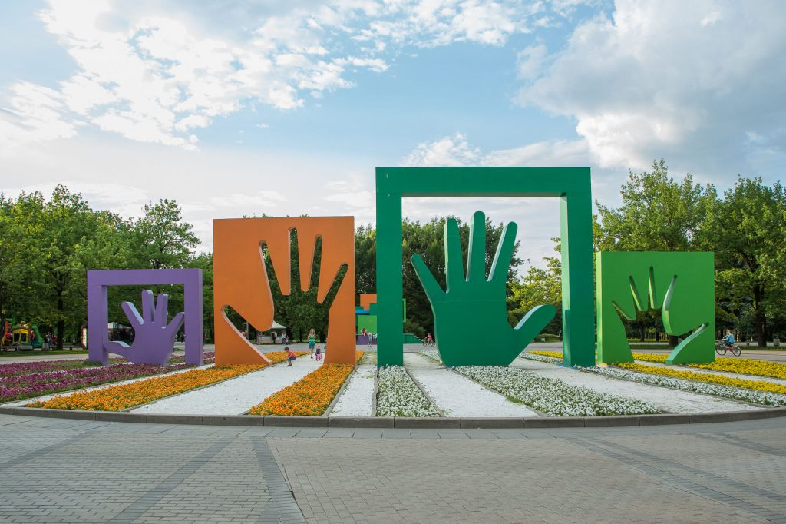

Парк 50-летия Октября
Парк 50-летия Октября — лесопарк на западе Москвы, расположенный на территории муниципального округа Проспект Вернадского, между проспектом Вернадского, улицами Удальцова и Раменки. Площадь парка — 67 га.

Парк создан на берегах реки Раменки по обеим сторонам тогдашнего Боровского шоссе, которое в пределах парка превращено в аллею. Парк имеет радиально-кольцевую планировку с уклоном от улицы Удальцова в сторону Тарасовского и Дашина оврагов. Есть пруды и довольно обильный родник, созданы декоративные кулисы из различных пород деревьев: берёз, осин, клёнов, дубов, каштанов, ясеней, елей, сосен, рябин, черёмух, ив, очень многочисленен клён ясенелистный.

Главная аллея начинается от северного выхода со станции метро Проспект Вернадского. На аллее установлен памятник воинам-интернационалистам. Одна из аллей парка — «Аллея памяти партизан Подмосковья» — высажена ветеранами партизанского движения Великой Отечественной войны.
В центре парка, где сходятся основные аллеи, расположена открытая сцена для выступлений. Здесь находится один из символов зеленой зоны – скульптурная композиция «Моя семья» (её также называют «Ладошки»).
В парке имеется много детских и спортивных площадок. Среди спортивной инфраструктуры: зоны для волейбола, баскетбола, большого тенниса, настольного тенниса, бадминтона, скалодром, уличные тренажеры, скейт-парк, площадки воркаут. Предусмотрены велодорожки и беговая дорожка. Для детей построены игровые городки с современными аттракционами (включая тарзанку).
В парке работает прокат инвентаря, проводятся увеселительные и образовательные мероприятия, детские кружки и занятия в рамках проекта для людей старшего поколения «Московское долголетие». Есть павильон для коворкинга.